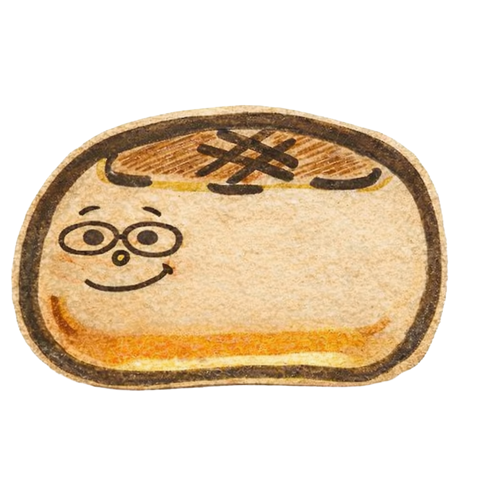
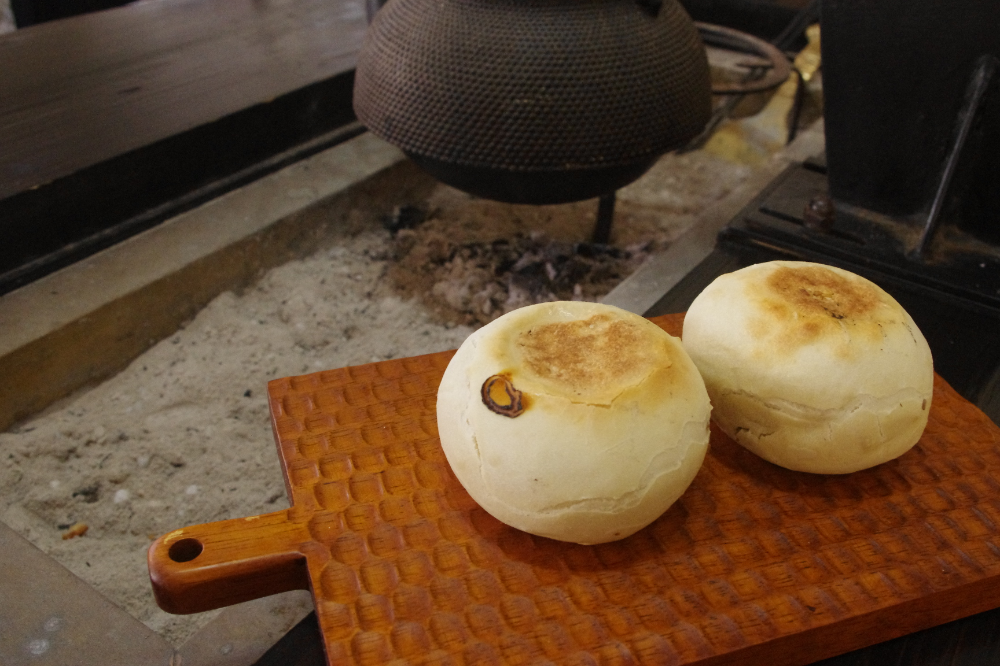
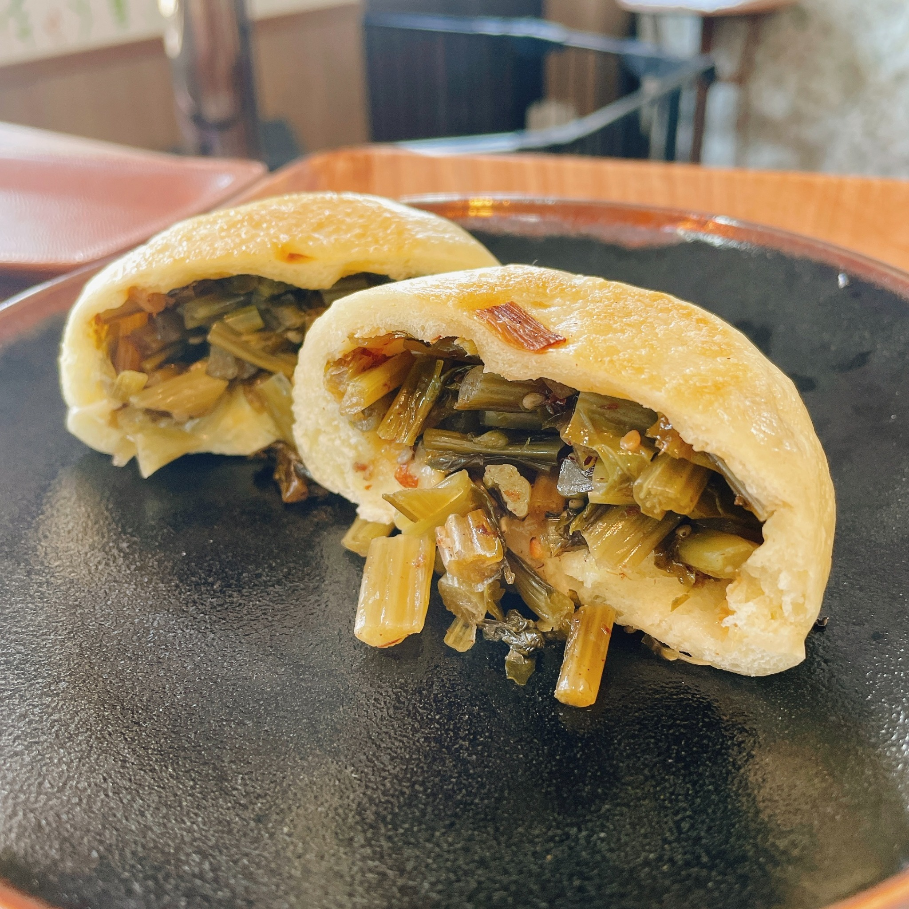
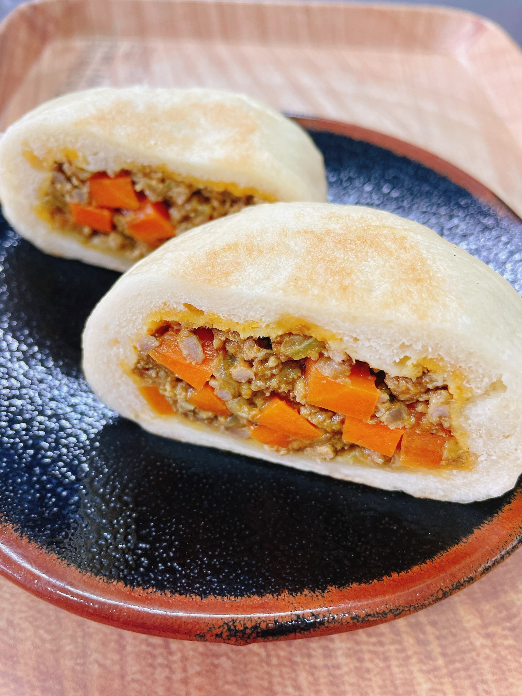
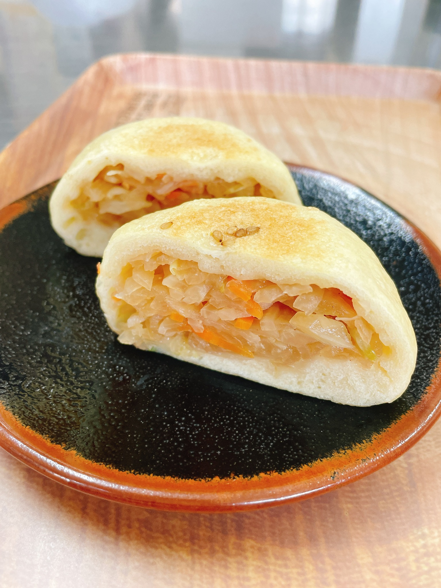
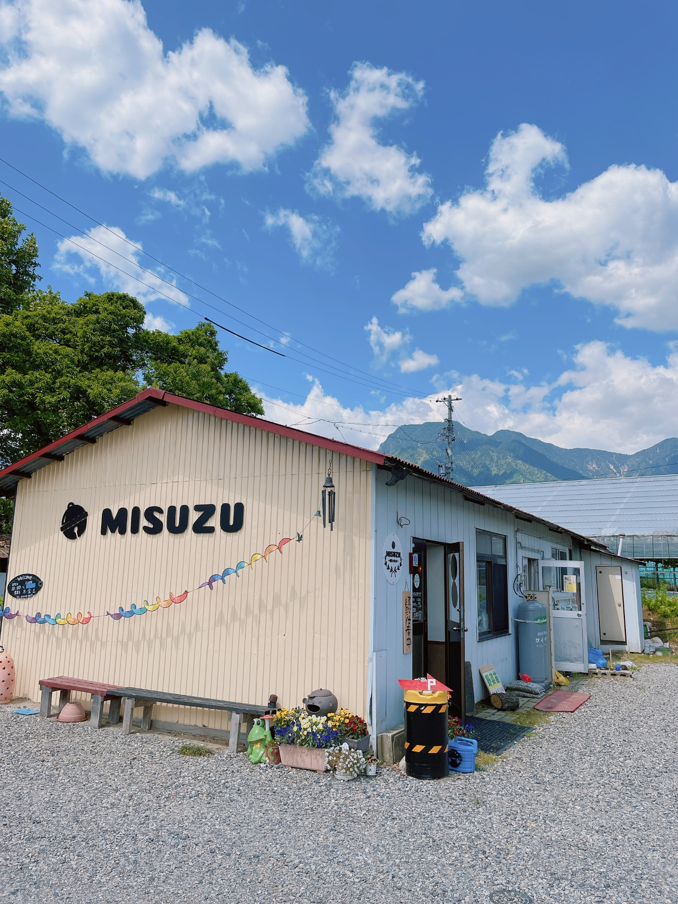
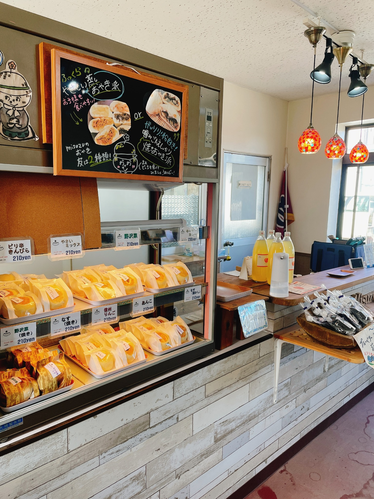

地元野菜を使用
畑で育った野菜や地元の恵みを活かし、季節を感じられる具材を大切にしています。
自然＊食工房MISUZUが、地元野菜の恵みを包んだおやきを、まごころ込めてお届けします。 畑の景色や季節のうつろいを感じられる、素朴でほっとする味を大切にしています。

自然＊食工房MISUZUでは、信州の風土の中で育まれた味わいを大切にしながら、 素朴でどこか懐かしいおやきを手づくりしています。毎日の食卓にそっと寄り添えるような、 やさしい味を、農家のまごころとともにお届けします。
素材を大切にしながら、手づくりならではのぬくもりを包んでいます。
畑で育った野菜や地元の恵みを活かし、季節を感じられる具材を大切にしています。
ひとつひとつ丁寧に包むことで、機械では出せない素朴な表情とぬくもりが生まれます。
味付けはやさしく。野菜そのものの甘みや旨みを感じられるよう心がけています。
おやきという郷土食が持つ、懐かしさと安心感を、今の暮らしにも寄り添う形で届けます。


信州おやきの定番。野沢菜の風味とほどよい塩気が広がる、素朴なおいしさです。

お子様から大人まで人気のキーマカレーです。

大根がメインのやさしい味わいを楽しめる、人気のミックスおやきです。

夢ふぁーむTOYAは、信州の自然の中で、春は野菜の苗、夏はブルーベリー、秋はぶどうやお米を育てながら、土づくりから丁寧に向き合っています。 おやきに包まれる具材のひとつひとつに、畑で過ごした時間と手間、そして作り手の想いが込められています。
夢ふぁーむTOYAをもっと見る季節のおやき、営業日のお知らせ、出店情報、畑の様子などをInstagramでご紹介しています。 日々の小さなできごとや、旬のおいしさも、どうぞ気軽にのぞいてみてください。
Instagramを見る
販売方法によって異なります。詳しくは商品案内またはお問い合わせでご確認ください。
冷凍の場合、電子レンジで600wで２分温めていただくと、おいしくお召し上がりいただけます。
配送対応可能です。冷凍発送になります。詳しくはお問い合わせください。